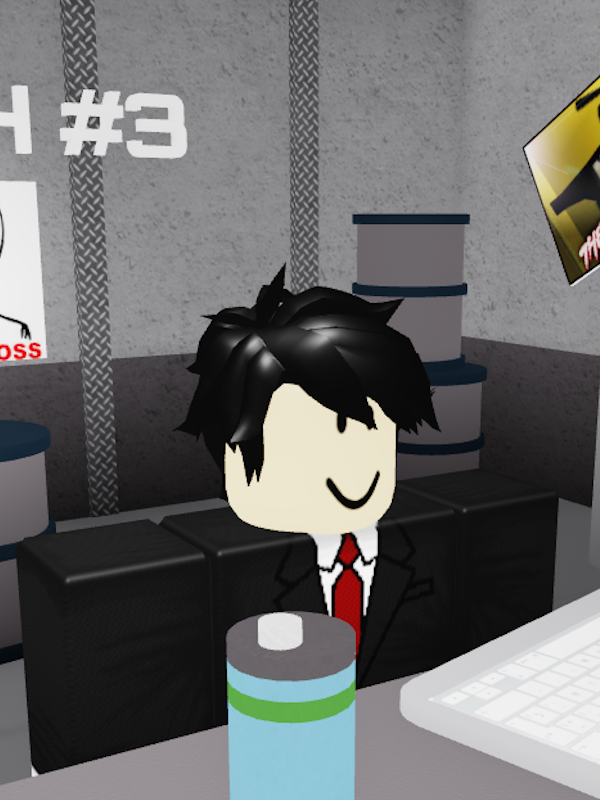

Jeremy

Jeremy is one of the most notable characters in TPCL. He wears a white shirt with a black coat ontop. He also has a red tie and black trousers, and he has dark hair.
Trivia
• Jeremy works as a scientist/warden in the Test Place Research Facility.
• Jeremy has a functional panic button under his table.
• If you try to chat with Jeremy, he will talk about how funny it is to see the test subjects escape and get captured over and over again.
• Jeremy is credited in TPCL's ending.
• Jeremy is based off of Jeremy Donaldson from Not For Broadcast.
• Jeremy has a functional panic button under his table.
• If you try to chat with Jeremy, he will talk about how funny it is to see the test subjects escape and get captured over and over again.
• Jeremy is credited in TPCL's ending.
• Jeremy is based off of Jeremy Donaldson from Not For Broadcast.